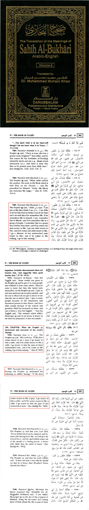
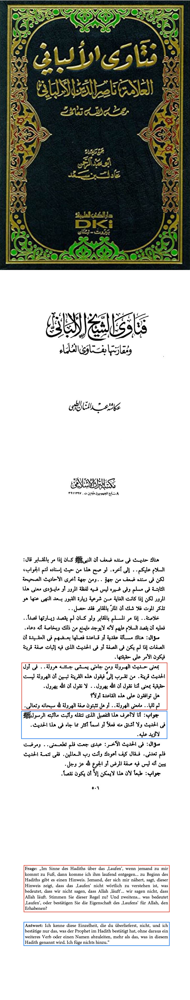
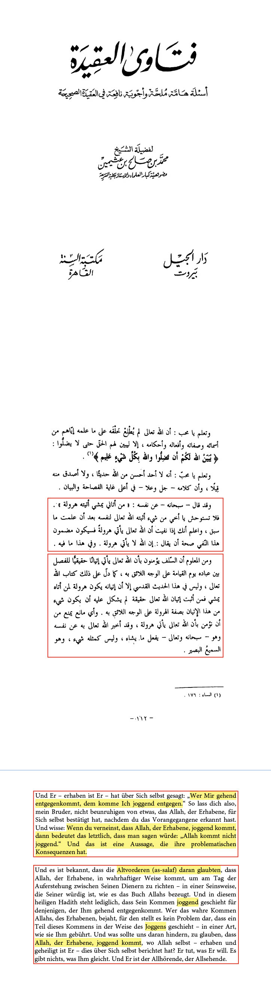
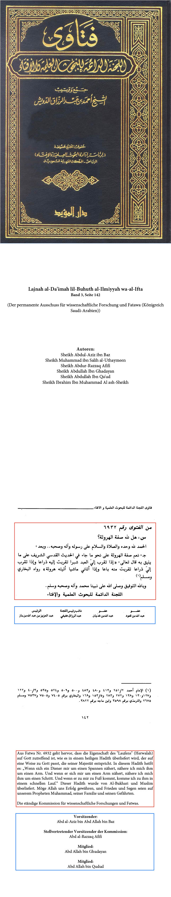

Christentum & Islam
Studie mit Quellen
Christentum
Kirchenväter über Trinität
Was sagen die frühsten Quellen über die Trinität?
.jpg)
Barnabas
5 v. Chr – 61 n. Chr
.jpg)
Clemens von Rom
35–99 n. Chr
.jpg)
Ignatius von Antiochien
35–107 n. Chr
.jpg)
Die Didache
50–150 n. Chr
.jpg)
Aristides von Athen
100–150 n. Chr
.jpg)
Justin der Märtyrer
100–165 n. Chr
.jpg)
Polykarp von Smyrna
69–155 n. Chr
.jpg)
Melito von Sardes
90–180 n. Chr
.jpg)
Athenagoras von Athen
133–190 n. Chr
.jpg)
Theophilus von Antiochien
† um 183 n. Chr
Test 2
Beschreibung christlicher Architektur...

Gothic Cathedral
European Architecture Encyclopedia

Moderne Kirche
Contemporary Religious Architecture
Islam
Allah Joggt
Allahs Attribute des Joggens

Sahih al-Bukhari, Band 9, Seite 301, 386, 387

Fatawa Al-Albani, Seite 506

Fatawa al-Aqida von Muhammad ibn Al-Uthaymeen, Seite 112

Quelle im Bild
Test 2
Beschreibung islamischer Architektur...

Traditional Mosque
Islamic Architecture Through Ages

Detailed Minaret Design
Architectural Elements of Islam